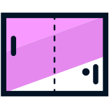

Home
Sobre mim
Certificados
Projetos
Cursos concluídos - Alura Cursos
Arquitetura de computadores: por trás de como seu programa funciona
Git e GitHub: repositório, commit e versões
HTML e CSS: ambientes de desenvolvimento, estrutura de arquivos e tags
HTML e CSS: cabeçalho, footer e variáveis CSS
HTML e CSS: Classes, posicionamento e Flexbox
HTML e CSS: trabalhando com responsividade e publicação de projetos
HTML e CSS: aprimorando habilidades com práticas avançadas
HTML e CSS: responsividade com mobile-first
JavaScript para Web: Crie páginas dinâmicas
Lógica de programação: comece em lógica com JavaScript
Lógica de programação: laços e listas com JavaScript
Linux I: conhecendo e utilizando o terminal